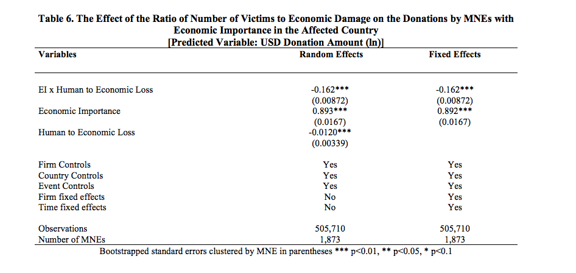

Is it the Employees’ Altruism or Reciprocity?
According to arguments on social preferences, firms may donate in response to social preferences from internal stakeholders. For instance, the reciprocal motives of employees may lead the philanthropic behavior of MNEs more than the goal of restoring economic institutions (Charness and Rabin, 2002; Fehr and Fischbacher, 2002; Small and Simonsohn, 2008). The risk of this confounder is important in our setting given that research has shown that people react more strongly to shock-related losses than to chronic conditions (Small, 2010). To assess this, we use our proprietary database to incorporate employee-driven donation, a binary variable that takes value “1” when the firm donation was initiated by the employees through a matching program. The coefficient of the interaction of this variable with economic importance is statistically significant and negative suggesting that when our studied MNEs donated following an initiative by employees, the donation amount was significantly lower than when not.
To further test the argument that business decision makers donate to satisfy altruistic motives, we use the natural logarithms of the number of affected people and economic damage to construct a measure of the relative magnitude of human to economic loss. We found that the amount of donation decreases in the interaction with economic importance (Table 6). The result is consistent with the theory of donations whose purpose is for economic recovery and are also consistent with the skewness of donations to institutional disruptions with substantial economic costs vis-à-vis human impacts across the events in the period 1997 to 2018.
